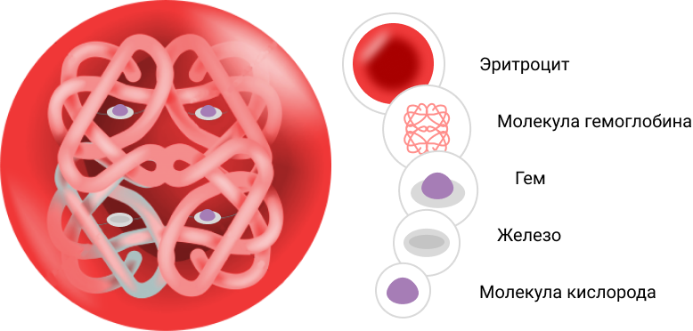

Железо в организме
Зачем железо нужно организму?
Благодаря гемоглобину происходит транспорт кислорода во все органы. Запасы железа хранятся в виде ферритина, главным образом в макрофагах и клетках печени, небольшое количество в мышечной ткани. Железо принимает участие в процессах кроветворения, в производстве энергии в клетках и обновлении клеток.
Недостаток железа в организме может привести к сбою в работе эндокринной, сердечно-сосудистой и центральной нервной системы, а также работоспособности головного мозга.
Гемоглобин и миоглобин
Строение эритроцита
Ферменты, которые зависят от железа
Ферменты – это ключевые «регуляторы» работы нашего организма. Существует огромное количество разновидностей ферментов, которые встречаются во всем организме без исключения.
Большинству ферментов для выполнения своей работы требуется специальный вид железа, которое называет «негемовое (трехвалентное железо) железо». Например, ферменты необходимы для превращения питательных веществ («полуфабрикатов») в конечную энергию.
Железо, которое хранится в запасе. Ферритин и трансферрин – что это?
Для сохранения железа в запасе, организм связывает это железо со специальным белком, который называется ферритин. Один такой белок может сохранять в запасе вокруг себя до 45000 частиц железа. Основными местами хранения железа (депо железа) в организме являются печень, скелетные мышцы. Если их запасающая способность снижена, то это может приводить к отравлению организма железом.

Чтобы лучше поддерживать баланс между активным железом и железом в виде запасов, требуется аскорбиновая кислота (витамин С), которая стимулирует всасывание железа из пищи и способствует лучшей связи железа с его переносчиком трансферрином в крови. Аскорбиновая кислота также стимулирует образование ферритина. Этот факт часто используется для повышения степени всасывания железа организмом. Например, таблетированная форма сульфата железа II в сочетании с аскорбиновой кислотой позволяет улучшить всасывание железа и усилить восстановление уровня гемоглобина.
При дефиците железа организм человека начинает испытывать симптомы недостатка кислорода. Клинически это проявляется такими симптомами, как слабость, головокружение, одышка и другими проявлениями. От достаточного количества железа зависит правильная работа иммунитета, который помогает бороться с инфекцией. Железо необходимо для здорового роста, развития мозга у детей².
Нормы содержания железа в крови
железа
400 мг
и железодефицитной анемии


Выявление железодефицитной анемии (ЖДА) начинается с общего анализа крови и оценки его результатов. Для ЖДА характерны следующие значения показателей11:
- Уровень гемоглобина у беременных <110 г/л, у небеременных женщин <120 г/л, у мужчин <130 г/л
- Средняя концентрации гемоглобина в эритроцитах (МСНС) <30 г/дл
- Среднее содержание гемоглобина в эритроцитах (МСН) <28 пг
- Средний объем эритроцитов (МСV) <80 фл
Далее следует определить концентрацию железа в крови, вместе с белками, участвующими в его обмене, например, ферритином. Представлены отклонения от нормы этих показателей:10
- Уровень ферритина сыворотки <11,0 мкг/л
- Железосвязывающая способность сыворотки >90 мкмоль/л
- Сывороточное железо <10,7 мкмоль/л
- Коэффициент насыщения трансферрина железом <17,8%
Стоит еще раз отметить, что железодефицитная анемия – это состояние, возникающее при полном истощении депо железа – ферритина.
Поэтому важно контролировать уровень ферритина сыворотки крови для предотвращения ЖДА. Уровень ферритина <30 мкг/л при нормальном значении гемоглобина (>120 г/л) свидетельствует о латентном дефиците железа – состоянии, при котором начинается истощение запасов железа.


Доктор назначает лечение пациенту с ЖДА и оценивает динамику проводимой терапии через лабораторные показатели. Люди, страдающие серьезной железодефицитной анемией или страдающие длительными заболеваниями, с большей вероятностью будут получать внутривенное введение железа.
При внутривенном введении препаратов железа могут возникнуть нежелательные побочные эффекты, такие как: рвота или головные боли сразу после введения, которые обычно проходят через несколько дней.
У людей, страдающих хроническим заболеванием почек, часто наблюдается железодефицитная анемия. При лечении данного состояния вместе с препаратами железа используются лекарственные средства, которые стимулируют костный мозг вырабатывать больше красных кровяных телец (эритроцитов).
В условиях стационара по медицинским показаниям (серьезной, жизнеугрожающей железодефицитной анемии) проводится переливание крови, что позволяет быстро увеличить количество красных кровяных телец и железа в крови. Они могут быть использованы для лечения серьезной, жизнеугрожающей железодефицитной анемии.
В дополнение к препаратам железа важно придерживаться здорового питания и выбирать продукты, богатые железом. Некоторые продукты, такие как черный чай, могут снизить усвояемость железа7.
Профилактика развития железодефицита в организме
Существует общее мнение о том, что наиболее желательной, устойчивой и безопасной стратегией борьбы с дефицитом железа является постоянное поступление биодоступного железа с пищей в достаточных количествах и сокращение потерь железа на протяжении всего жизненного цикла.
Большинство людей могут предотвратить дефицит железа, потребляя достаточное количество железа в своем рационе. В то время как искусственное ограничение рациона питания в продуктах, содержащих высокое содержание железа (красное мясо), является фактором риска развития железодефицита, особенно у групп пациентов, которым физиологически требуется высокое потребление железа. А именно дети, подростки, беременные и пожилые лица особенно подвержены риску развития железодефицита и требуют рациона питания, обогащённого железом. Очень важно таким пациентам регулярно сдавать анализы на показатели уровня железа в организме.
Продукты, богатые железом:
Организм лучше усваивает железо из мяса, чем из других источников. Если вы решили исключить из рациона мясо, то в данном случае необходимо понимать, что вы не сможете компенсировать то суточное количество железа, которое необходимо организму, за счет растительной пищи. Поэтому очень важно дополнительно принимать добавки, в частности препаратов железа8.
Витамин С способствует высокой усвояемости железа организмом, поэтому рекомендуется обогатить свой рацион следующими продуктами:
- Брокколи
- Листовая зелень
- Грейпфрут
- Дыни
- Киви
- Перцы
- Апельсины
- Клубника
- Помидоры8
- Мандарины
Однако не стоит чрезмерно потреблять железо без необходимости. Гораздо реже, чем дефицит железа, встречается и избыток железа.
Также повышают всасываемость железа заболевания печени, особенно алкогольная болезнь печени и хронический гепатит. В этих органах избыток железа вызывает химическую реакцию, повреждающую здоровые клетки печени. Таким образом, очень важно следить за уровнем железа в организме, поскольку недостаток или избыток данного микроэлемента может привести к серьезным нарушениям в работе всего организма.


дефицита железа
Узнай больше о дефиците железа

Список литературы
- National Institutes of Health Office of Dietary Supplements: Iron Fact Sheet for Health Professionals https://ods.od.nih.gov/factsheets/Iron-HealthProfessional/. Accessed 9/2/2019.
- Powers JM, Buchanan GR. Disorders of Iron Metabolism: New Diagnostic and Treatment Approaches to Iron Deficiency. Hematology/Oncology Clinics. 2019 Jun 1;33(3):393-408.
- The quantitative assessment of body iron. Cook JD, Flowers CH, Skikne Blood. 2003;101(9):3359. Epub 2003 Jan 9
- High nontransferrin bound iron levels and heart disease in thalassemia major. Piga A, Longo F, Duca L, Roggero S, Vinciguerra T, Calabrese R, Hershko C, Cappellini MD Am J Hematol. 2009;84(1):29.
- Auto-oxidation and a membrane-associated 'Fenton reagent': a possible explanation for development of membrane lesions in sickle erythrocytes. Hebbel RP Clin Haematol. 1985;14(1):129
- Iron deficiency anaemia. Lopez A, Cacoub P, Macdougall IC, Peyrin-Biroulet L Lancet. 2016 Feb;387(10021):907-16. Epub 2015 Aug 24
- National Institutes of Health Office of Dietary Supplements: Iron Fact Sheet for Health Professionals https://ods.od.nih.gov/factsheets/Iron-HealthProfessional/. Accessed 9/2/2019.
- Institute of Medicine. Food and Nutrition Board. Dietary Reference Intakes for Vitamin A, Vitamin K, Arsenic, Boron, Chromium, Copper, Iodine, Iron, Manganese, Molybdenum, Nickel, Silicon, Vanadium, and Zinc : a Report of the Panel on Micronutrients. Washington, DC: National Academy Press; 2001
- American Academy of Pediatrics. 1976 Iron supplementation for infants. Pediatrics 58:765–768
- Клинические рекомендации Железодефицитная анемия // Национальное гематологическое общество // Национальное общество детских гематологов и онкологов, 2021 г
- Резолюция совета экспертов по железодефицитной анемии у женщины Акушерство и гинекология: новости, мнения, обучение. 2020 Т. 8, № 4 С. 28–36. DOI: 10.24411/2303-9698-2020-14004